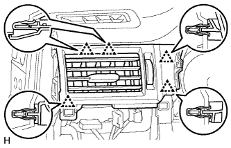
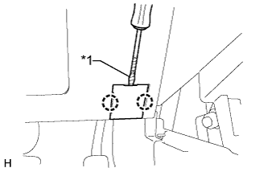
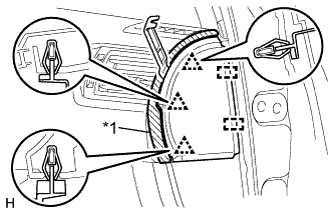

INSTRUMENT PANEL SAFETY PAD > REMOVAL |
| 1. TABLE OF BOLT, SCREW AND NUT |
| 2. DISCONNECT CABLE FROM NEGATIVE BATTERY TERMINAL |
Disable the auto tilt away function by changing the customize parameter (Click here).
Turn the engine switch on (IG). Operate the tilt and telescopic switch to fully extend and lower the steering column assembly.
Turn the engine switch off and disconnect the cable from the negative (-) battery terminal.
| Condition | Waiting Time |
| Vehicle enrolled in G-BOOK system | 6 minutes |
| Vehicle not enrolled in G-BOOK system | 1 minute |
| 3. REMOVE HEADLIGHT DIMMER SWITCH ASSEMBLY |
Remove the headlight dimmer switch assembly (Click here).
| 4. REMOVE REAR CONSOLE BOX ASSEMBLY |
w/o Refrigerated Cool Box:
Remove the rear console box assembly (Click here).
w/ Refrigerated Cool Box:
Remove the rear console box assembly (Click here).
| 5. REMOVE DOOR SCUFF PLATE ASSEMBLY LH |
 |
Put protective tape around the door scuff plate.
| *1 | Protective Tape |
Using a screwdriver, detach the 4 clips, 10 claws and 2 guides.
Disconnect the connector and remove the door scuff plate.
| 6. REMOVE DOOR SCUFF PLATE ASSEMBLY RH |
| 7. REMOVE COWL SIDE TRIM BOARD LH |
 |
Remove the clip.
Detach the clip and claw and remove the cowl side trim board.
| 8. REMOVE COWL SIDE TRIM BOARD RH |
| 9. REMOVE FRONT DOOR OPENING TRIM WEATHERSTRIP LH |
 |
Remove the front door opening trim weatherstrip.
| 10. REMOVE FRONT DOOR OPENING TRIM WEATHERSTRIP RH |
| 11. REMOVE FRONT NO. 1 ASSIST GRIP PLUG LH |
 |
Using a screwdriver, detach the 2 claws and remove the front No. 1 assist grip plug.
| *1 | Protective Tape |
| 12. REMOVE FRONT NO. 1 ASSIST GRIP PLUG RH |
| 13. REMOVE NO. 1 ASSIST GRIP |
 |
Remove the 2 bolts.
Detach the 2 claws and remove the No. 1 assist grip.
| 14. REMOVE FRONT PILLAR GARNISH LH |
 |
Detach the 3 guides and remove the front pillar garnish.
 |
Protect the curtain shield airbag assembly.
Completely cover the airbag with a cloth or nylon sheet and secure the ends of the cover with adhesive tape as shown in the illustration.
| *1 | Curtain Shield Airbag Assembly |
| *2 | Adhesive Tape |
| *3 | Protective Cover |
| 15. REMOVE FRONT PILLAR GARNISH RH |
| 16. REMOVE INSTRUMENT SIDE PANEL LH |
Put protective tape around the instrument side panel.
| *1 | Protective Tape |
Using a moulding remover, detach the 3 clips and 2 guides and remove the instrument side panel.
| 17. REMOVE NO. 2 SWITCH HOLE BASE |
 |
Put protective tape around the No. 2 switch hole base.
| *1 | Protective Tape |
Using a moulding remover, detach the 5 clips and claw.
Disconnect each connector and remove the No. 2 switch hole base.
| 18. REMOVE NO. 1 INSTRUMENT PANEL FINISH CUSHION |
 |
Put protective tape around the No. 1 instrument panel finish cushion.
| *1 | Protective Tape |
Using a moulding remover, detach the 4 clips.
Disconnect the connector and remove the No. 1 instrument panel finish cushion.
| 19. REMOVE LOWER INSTRUMENT PANEL FINISH PANEL ASSEMBLY |
 |
Detach the 4 clips.
Disconnect each connector and cooler thermistor and remove the instrument panel finish panel.
| 20. REMOVE INSTRUMENT CLUSTER FINISH PANEL SUB-ASSEMBLY |
 |
Detach the 4 claws, 2 clips and guide and remove the instrument cluster finish panel.
| 21. REMOVE NO. 1 INSTRUMENT PANEL REGISTER ASSEMBLY |
|  |
Detach the 5 clips and remove the No. 1 instrument panel register.
| 22. REMOVE COMBINATION METER ASSEMBLY |
 |
Remove the 2 screws.
Detach the 2 clips.
Disconnect the connector and remove the combination meter assembly.
| 23. REMOVE LOWER INSTRUMENT PANEL FINISH PANEL SUB-ASSEMBLY |
|  |
Using a screwdriver, detach the 2 claws and open the cover.
| *1 | Protective Tape |
 |
Remove the 2 bolts <C>.
Detach the 13 clips and 2 guides.
Disconnect each connector and cable and remove the lower instrument panel finish panel.
| 24. REMOVE LOWER NO. 1 INSTRUMENT PANEL AIRBAG ASSEMBLY |
 |
Remove the 4 bolts and airbag assembly.
Disconnect the connector.
| 25. REMOVE INSTRUMENT SIDE PANEL RH |
|  |
Put protective tape around the instrument side panel.
| *1 | Protective Tape |
Using a moulding remover, detach the 3 clips and 2 guides and remove the instrument side panel.
| 26. REMOVE CENTER INSTRUMENT CLUSTER FINISH PANEL GARNISH |
 |
Detach the 13 clips and remove the center instrument cluster finish panel garnish together with the instrument cluster finish panel garnish.
| *1 | Center Instrument Cluster Finish Panel Garnish |
| *2 | Instrument Cluster Finish Panel Garnish |
| 27. REMOVE NO. 2 INSTRUMENT PANEL REGISTER ASSEMBLY |
 |
Detach the 8 clips and remove the No. 2 instrument panel register.
| 28. REMOVE LOWER INSTRUMENT COVER LH |
 |
Put protective tape around the lower instrument cover.
Using a screwdriver, detach the 4 claws and remove the lower instrument cover.
| *1 | Protective Tape |
| 29. REMOVE LOWER NO. 2 INSTRUMENT PANEL AIRBAG ASSEMBLY |
 |
Remove the 3 bolts.
Detach the 6 claws and remove the instrument panel airbag.
Disconnect the connector.
| 30. REMOVE INSTRUMENT PANEL BOX DOOR COVER |
 |
Using a screwdriver, detach the 2 claws and 2 guides and remove the instrument panel box door cover.
| *1 | Protective Tape |
| 31. REMOVE INSTRUMENT PANEL BOX ASSEMBLY |
 |
Remove the 3 screws <B> and 2 bolts <C>.
| *1 | Screw <B> |
| *2 | Bolt <C> |
Detach the 4 clips.
Disconnect each connector, detach the clamp and remove the instrument panel box.
| 32. REMOVE DRIVING SUPPORT SWITCH CONTROL ECU |
Disconnect the connector.
Remove the bolt and driving support switch control ECU.
| 33. REMOVE FOUR WHEEL DRIVE CONTROL ECU |
 |
Disconnect the 2 connectors.
Remove the bolt and four wheel drive control ECU.
| 34. REMOVE MULTI-MEDIA INTERFACE ECU |
Disconnect the 3 connectors.
Remove the 2 nuts and multi-media interface ECU.
| 35. REMOVE TELEMATICS TRANSCEIVER |
Disconnect the connectors.
 |
Remove the bolt, nut and telematics transceiver with bracket from the vehicle.
| 36. REMOVE FRONT UPPER CONSOLE PANEL GARNISH |
 |
Detach the 2 clips and remove the front upper console panel garnish.
| 37. REMOVE RADIO RECEIVER ASSEMBLY |
w/o Navigation System:
Remove the radio receiver assembly (Click here).
w/ Navigation System:
Remove the radio receiver assembly (Click here).
| 38. REMOVE AIR CONDITIONING CONTROL ASSEMBLY (w/o Navigation System) |
 |
Remove the 2 bolts.
Detach the 7 clips.
Disconnect the connectors and remove the air conditioning control assembly.
| 39. REMOVE DISPLAY AND NAVIGATION MODULE DISPLAY (w/ Navigation System) |
 |
Remove the 4 bolts.
 |
Pull the display and navigation module display to detach the 7 clips on the backside of the display and navigation module display.
Disconnect the connectors and remove the display and navigation module display.
| 40. REMOVE UPPER INSTRUMENT CLUSTER FINISH PANEL |
 |
Put protective tape around the upper instrument cluster finish panel.
Using a screwdriver, detach the 11 clips and remove the upper instrument cluster finish panel.
| *1 | Protective Tape |
| 41. REMOVE FRONT NO. 4 SPEAKER ASSEMBLY |
 |
Remove the 2 screws.
Remove the front No. 4 speaker and disconnect the speaker connector.
| 42. REMOVE NO. 1 INSTRUMENT PANEL SPEAKER PANEL SUB-ASSEMBLY |
 |
Put protective tape around the No. 1 instrument panel speaker panel.
Using a screwdriver, detach the 2 clips, claw and 2 guides and remove the No. 1 instrument panel speaker panel.
| *1 | Protective Tape |
| 43. REMOVE NO. 2 INSTRUMENT PANEL SPEAKER PANEL SUB-ASSEMBLY |
| 44. REMOVE FRONT NO. 2 SPEAKER ASSEMBLY |
 |
Remove the 2 screws.
Remove the front No. 2 speaker and disconnect the speaker connector.
| 45. REMOVE FRONT NO. 3 SPEAKER ASSEMBLY |
Disconnect the connector.
Detach the clip and claw and remove the front No. 3 speaker.
| 46. REMOVE FRONT SEAT ASSEMBLY LH |
Remove the front seat assembly (Click here).
| 47. REMOVE FRONT SEAT ASSEMBLY RH |
| 48. REMOVE INSTRUMENT PANEL SAFETY PAD SUB-ASSEMBLY |
Partially remove the floor carpet.
Remove the 6 bolts <D> and nut <E>.
Remove the 2 passenger airbag bolts <F>.
Disconnect the connectors and detach the clamps and claws.
Detach the 2 guides and remove the instrument panel safety pad.

| *1 | Bolt <D> | *2 | Nut <E> |
| *3 | Bolt <F> | *4 | Guide |